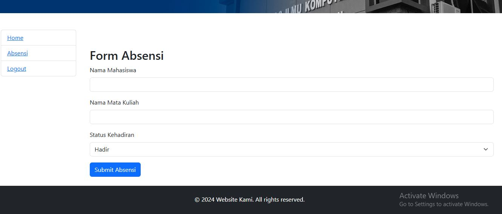
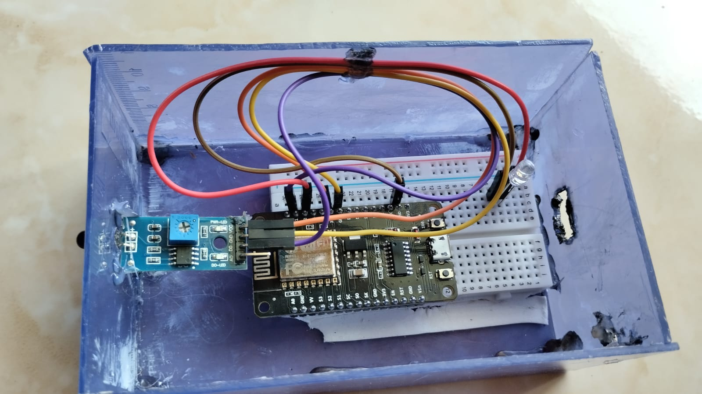
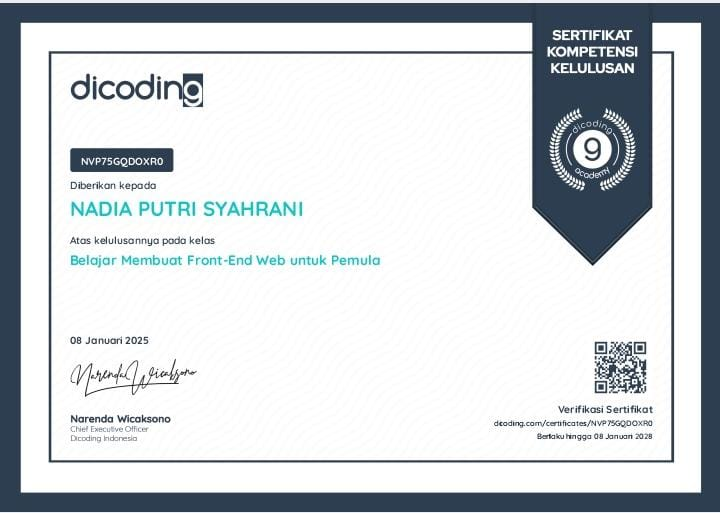

Proyek-Proyek Saya

Proyek Website Absensi
Desain dan pengembangan website Absensi untuk Melakukan Absensi pada Mahasiswa.


Proyek IoT Pendeteksi Kebakaran
Pendeteksi kebakaran dengan IoT yang mengirimkan notifikasi melalui WhatsApp.

Project Dicoding
Desain dan pengembangan website untuk pemula menggunakan HTML, JavaScript, dan CSS.